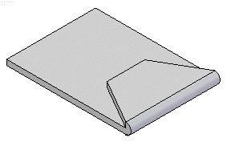
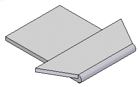

Hem Options dialog box
- Saved Settings
-
Lists saved hem settings. You can access the saved settings by selecting them from the list. The settings on the dialog box display the characteristics of the hem you select. You can type a name in the box to name a group of settings.
You can then use the Saved Settings list on the Hem Options dialog box or the Hem command bar to select a saved setting later in any Solid Edge document that allows you to construct hem features. The saved settings are added to the Custom.xml file in the \Program Files\Siemens\Solid Edge 2023\Preferences folder. You can also use the File Locations tab on the Options dialog box to specify a different folder for the Custom.xml file.
- Save
-
Saves the current settings with the name you type.
- Delete
-
Deletes the saved settings selected in the Save Settings box.
- Hem Profile
-
Specifies the type of hem being created along with information such as bend radius, flange length, and sweep angle for the hem. The options that are available depend on the type of hem being created. A graphic displays an example of the selected hem type along with the location of the options available for the hem type.
- Hem Type
-
Specifies the type of hem to be created.
- Bend Radius 1
-
Specifies the bend radius for the first bend in the hem.
- Flange Length 1
-
Specifies the length for the first flange in the hem.
- Bend Radius 2
-
Specifies the bend radius for the second bend in the hem.
- Flange Length 2
-
Specifies the length for the second flange in the hem.
- Sweep Angle
-
Specifies the sweep angle for Open loop and Centered Loop hems.
- Miter Hem
-
Miters the end of the hem when checked.
- Bend Relief
-
Specifies that you want to apply bend relief to the source face from which the hem is constructed. When you set this option, you can also specify whether the bend relief is round or square, and whether the bend relief applies to only the material adjacent to the bend or to the entire face.
- Square
-
Specifies that the internal corners of the bend relief are to be square.
- Round
-
Specifies that the internal corners of the bend relief are to be round.
- Angle
-
Sets the miter angle for the specified end of the hem.
A negative value will miter the flange inward and will typically remove material.

A positive value will miter the flange outward and will typically add material.

- Depth
-
Specifies the depth of the bend relief.
- Use Default Value
-
Uses the default value specified on the Options dialog box.
- Width
-
Specifies the width of the bend relief.
- Neutral Factor
-
Specifies the neutral factor for the bend.
How do I
Construct a hemMove, rotate, or edit a hem
Look up more details
Hem commandHem command bar
Hem command bar